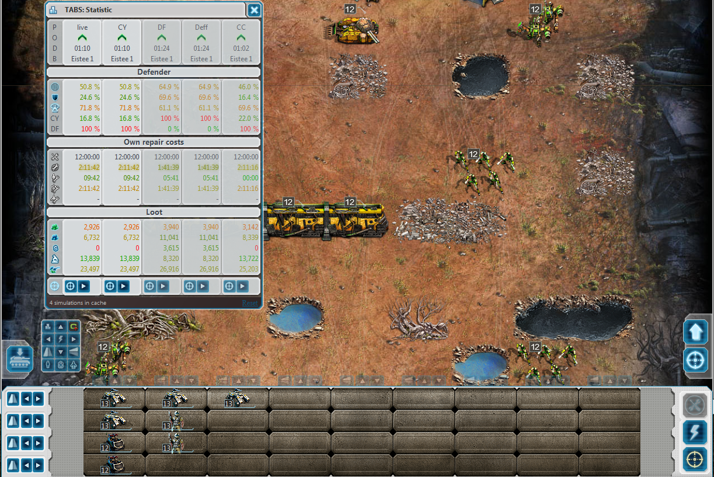

Tiberium Alliances Battle Simulator V2
Completely new simulator and stats calculation. It's 100% API no need to install any other Script. First simulator which calculates NOD upgrades correctly. Simulations are cached so you don't need to wait another 10 secounds to view the stats or simulation. Best results are automaticly filtered to the columns just doubleclick it to get the formation you need. Resize the stats window to get more columns and filters. Many functions are not done yet but at the moment you can already use it to get a first look. Please use the official Tiberium Alliances Forum (english or german) to comment and make suggestions for this script.
Author: Eistee and TheStriker
Feautures:
- Language: English + some ingame translations based on the Server you are playing.
- Translation: german
License:  (Scriptpacks are not allowed!)
(Scriptpacks are not allowed!)

Version: 14.07.11
- [N] CNCOpt Support (open battle setup with CNCOpt / load formation from CNCOpt Link)
- [N] Preset descriptions (mouseover)
- [N] More german translations
- [F] disable inf/veh/air for transported/transprter units
- [F] Sim replay with deactivated units.
- [F] ResearchPoints loot
- [N] Skip Button in replay view (fast mode with API wrapper + "slow" mode without)
- [F] Formation num lock keys no longer work in chat or textboxes
- [N] enable/disable only inf/veh/air buttons
- [N] Scripts Menu: load/save/reset Settings + Homepage Links
- [F] Battleground reset
- [F] sim disabled units
- first preview
- some functions are not finished yet
[N]: new, [F]: fixed